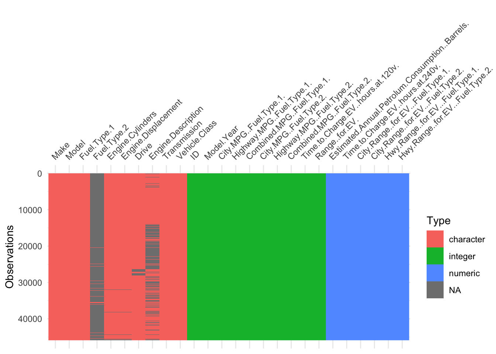
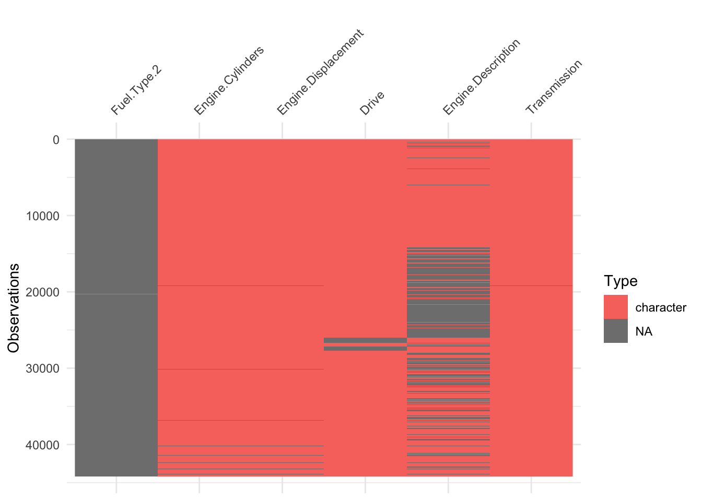

Data cleaning
In this section we will handle the missing value of our dataset to make sure that we have a clean dataset to perform our EDA and modeling. We will first visualize the missing values in our dataset and then clean the missing values in the columns that we will use for our analysis. We will also remove some rows and columns that are not relevant for our analysis.
Let’s have a look at the entire dataset and its missing values in grey.
We can see that overall, we do not have many missing values in proportion with the size of our dataset. However, we can see that some columns have a lot of missing values. Let’s have a look at the columns and rows with missing values more in details.

We can now more easily see the missing in our data. Below we have the detail of the pourcentage of missing values by columns.
Let’s first have a closer look at the engine cylinders and engine displacement columns.
We see that all the Electricity, 484 missing values in “Engine Cylinders” and “Engine Displacement” vehicle fuel type is only “Electricity”. Therefore, we can conclude that all the missing values in “Engine Cylinders” and “Engine Displacement” vehicle fuel type represent all our electric vehicle. This make sense since electric vehicle do not have an combustion engine and therefore those categories are not really applicable. We will therefore replace all missing values in this two columns with “none”.
# Create a summary dataframe of missing values by column
missing_summary_df2 <- data_cleaning %>%
summarise(across(everything(), ~sum(is.na(.)))) %>%
pivot_longer(cols = everything(), names_to = "Column", values_to = "Missing_Count") %>%
mutate(
Total_Rows = nrow(data),
Proportion_Missing = Missing_Count / Total_Rows
) %>%
arrange(desc(Proportion_Missing)) %>%
select(Column, "Missing values" = Missing_Count, "Prop. Missing" = Proportion_Missing)
# Print the summary dataframe
datatable(missing_summary_df2,
options = list(pageLength = 6,
class = "hover",
searchHighlight = TRUE),
rownames = FALSE)%>%
formatPercentage("Prop. Missing", 2)# Count the missing 'Drive' values per brand
missing_drive_by_make <- data_cleaning %>%
filter(is.na(Drive)) %>%
count(Make)
# Get total counts per brand in the entire dataset
total_counts_by_make <- data_cleaning %>%
count(Make)
# Calculate the percentage of missing 'Drive' values per brand
percentage_missing_drive_by_make <- missing_drive_by_make %>%
left_join(total_counts_by_make, by = "Make", suffix = c(".missing", ".total")) %>%
mutate(PercentageMissing = (n.missing / n.total)) %>%
arrange(desc(PercentageMissing))
# Print the summary dataframe
datatable(percentage_missing_drive_by_make,
options = list(pageLength = 6,
class = "hover",
searchHighlight = TRUE),
rownames = FALSE)%>%
formatPercentage("PercentageMissing", 2)
# Calculate the percentage of missing 'Drive' values per brand
brand_summary <- data_cleaning %>%
group_by(Make) %>%
summarise(Total = n(),
Missing = sum(is.na(Drive)),
PercentageMissing = (Missing / Total))
# Identify brands with more than 10% missing 'Drive' data
brands_to_remove <- brand_summary %>%
filter(PercentageMissing > brand_missing_threshold) %>%
pull(Make)
# Filter out these brands from the dataset
data_filtered <- data_cleaning %>%
filter(!(Make %in% brands_to_remove))
# For the remaining data, drop rows with missing 'Drive' values
data_cleaning2 <- data_filtered %>%
filter(!is.na(Drive))# Create a summary dataframe of missing values by column
missing_summary_df3 <- data_cleaning2 %>%
summarise(across(everything(), ~sum(is.na(.)))) %>%
pivot_longer(cols = everything(), names_to = "Column", values_to = "Missing_Count") %>%
mutate(
Total_Rows = nrow(data),
Proportion_Missing = Missing_Count / Total_Rows
) %>%
arrange(desc(Proportion_Missing)) %>%
select(Column, "Missing values" = Missing_Count, "Prop. Missing" = Proportion_Missing)
# Print the summary dataframe
datatable(missing_summary_df3,
options = list(pageLength = 6,
class = "hover",
searchHighlight = TRUE),
rownames = FALSE)%>%
formatPercentage("Prop. Missing", 2)# Remove rows where the 'Transmission' column has missing values
data_cleaning3 <- data_cleaning2 %>%
filter(!is.na(Transmission))
data_cleaning4 <- data_cleaning3 %>%
mutate(Fuel.Type.2 = replace_na(Fuel.Type.2, "none"))# Create a summary dataframe of missing values by column
missing_summary_df3 <- data_cleaning3 %>%
summarise(across(everything(), ~sum(is.na(.)))) %>%
pivot_longer(cols = everything(), names_to = "Column", values_to = "Missing_Count") %>%
mutate(
Total_Rows = nrow(data_cleaning3),
Proportion_Missing = Missing_Count / Total_Rows
) %>%
arrange(desc(Proportion_Missing)) %>%
select(Column, "Missing values" = Missing_Count, "Prop. Missing" = Proportion_Missing)
# Print the summary dataframe
datatable(missing_summary_df3,
options = list(pageLength = 3,
class = "hover",
searchHighlight = TRUE),
rownames = FALSE)%>%
formatPercentage("Prop. Missing", 2)